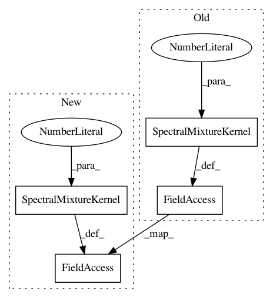

15b3563c3c7f700ee0bf23b0477527dfa5323cea,test/examples/test_spectral_mixture_gp_regression.py,SpectralMixtureGPModel,__init__,#SpectralMixtureGPModel#Any#Any#Any#,29
Before Change
def __init__(self, train_x, train_y, likelihood):
super(SpectralMixtureGPModel, self).__init__(train_x, train_y, likelihood)
self.mean_module = ConstantMean(constant_bounds=(-1, 1))
self.covar_module = SpectralMixtureKernel(
n_mixtures=3,
log_mixture_weight_bounds=(-5, 5),
log_mixture_mean_bounds=(-5, 5),
log_mixture_scale_bounds=(-5, 5),
)
def forward(self, x):
mean_x = self.mean_module(x)
covar_x = self.covar_module(x)
After Change
def __init__(self, train_x, train_y, likelihood):
super(SpectralMixtureGPModel, self).__init__(train_x, train_y, likelihood)
self.mean_module = ConstantMean(prior=SmoothedBoxPrior(-1, 1))
self.covar_module = SpectralMixtureKernel(
n_mixtures=3,
log_mixture_weight_prior=SmoothedBoxPrior(
torch.ones(3).fill_(-5).exp_(), torch.ones(3).fill_(-5).exp_(), sigma=0.1, log_transform=True
),
log_mixture_mean_prior=SmoothedBoxPrior(
torch.ones(3).fill_(-5).exp_(), torch.ones(3).fill_(-5).exp_(), sigma=0.1, log_transform=True
),
log_mixture_scale_prior=SmoothedBoxPrior(
torch.ones(3).fill_(-5).exp_(), torch.ones(3).fill_(-5).exp_(), sigma=0.1, log_transform=True
),
)
def forward(self, x):
mean_x = self.mean_module(x)
covar_x = self.covar_module(x)
In pattern: SUPERPATTERN
Frequency: 3
Non-data size: 4
Instances
Project Name: cornellius-gp/gpytorch
Commit Name: 15b3563c3c7f700ee0bf23b0477527dfa5323cea
Time: 2018-06-07
Author: balandat@fb.com
File Name: test/examples/test_spectral_mixture_gp_regression.py
Class Name: SpectralMixtureGPModel
Method Name: __init__
Project Name: cornellius-gp/gpytorch
Commit Name: c0182f9c2797a68dae88ebcea83a6fb05e8f9cca
Time: 2018-06-26
Author: gardner.jake@gmail.com
File Name: test/examples/test_spectral_mixture_gp_regression.py
Class Name: SpectralMixtureGPModel
Method Name: __init__
Project Name: cornellius-gp/gpytorch
Commit Name: 252d861e29c9ffd21182e01325f7672f9a4825bf
Time: 2018-06-07
Author: jrg365@cornell.edu
File Name: test/examples/test_spectral_mixture_gp_regression.py
Class Name: SpectralMixtureGPModel
Method Name: __init__